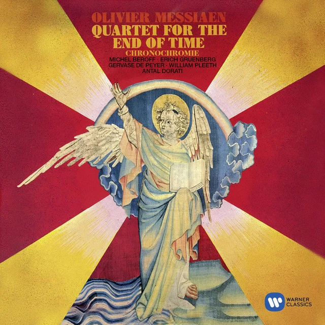
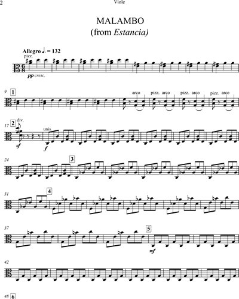

Sinfonía No. 5 en Do menor, Op. 67
Ludwig van Beethoven

Libertango
Astor Piazzolla

Zamba de mi Esperanza
Luis H. Profili

Cuarteto para el Fin de los Tiempos
Olivier Messiaen

Concierto de Brandeburgo No. 3
Johann Sebastian Bach

Nocturno en Mi bemol mayor, Op. 9, No. 2
Frédéric Chopin

Obertura de La Flauta Mágica
Wolfgang Amadeus Mozart

Lacrimosa (de Réquiem)
Wolfgang Amadeus Mozart

Rhapsody in Blue
George Gershwin

Malambo
Alberto Ginastera

El Cóndor Pasa
Daniel Alomía Robles

Canon en Re Mayor
Johann Pachelbel